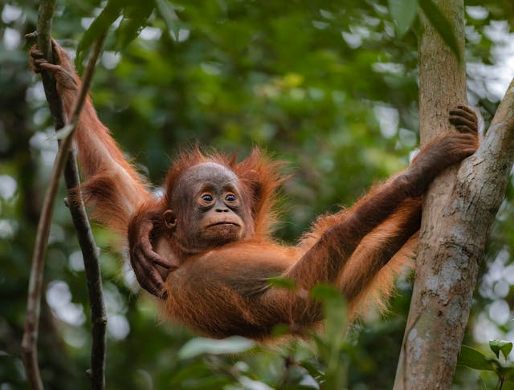

Learn more about the Orangutan

by Florian Kriechbaumer Pexels.
Orangutans are fascinating creatures with several unique traits. As the largest arboreal mammals, they spend most of their time in trees, using their long limbs to effortlessly grasp and glide among branches. Often referred to as the "gardeners of the forest," they play a critical role in maintaining the health and diversity of their rainforest habitats by dispersing seeds through their waste after consuming various fruits. There are three distinct species of orangutans: Bornean, Sumatran, and Tapanuli, with the Tapanuli orangutan being the most endangered, with fewer than 800 individuals remaining. Additionally, orangutans have an extended mother-child bond, with young orangutans depending on their mothers for survival skills for up to six or seven years, and sometimes even visiting them until they are 15 or 16 years old.